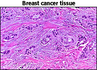

The Biology Project > Cell Biology > Studying Cells > Problems
Studying Cells Tutorial
The Scientific Method
What is it?
The scientific method is the experimental testing of a hypothesis formulated after the systematic, objective collection of data. A scientist who studies our immune system phrased this idea very well:
The scientific method is often divided into steps. This is helpful for putting the method into context, but keep in mind that the key element of the scientific method is testing the hypothesis. In other words, can you prove that you are wrong?
|

| Mistakes made in applying the scientific method to real-world problems can result in unsupported, or even incorrect, conclusions. An example of a scientific conclusions based on insufficient scientific method recently occurred in the field of breast cancer research. | |
|
Breast cancer is caused when normal cells change and produce a tumor. In a study published in the New England
Journal of Medicine (336, 1269 (1997)), scientists from Norway studied the incidence of breast cancer
in 25,624 women.
Participants gave details about their height, weight, diets, and exercise habits. The results showed an over all reduction of breast cancer by 37% for women who exercise regularly. Women who are lean and exercise at least 4 hrs per week showed the lowest incidence. |
 Image courtesy of WebPath |
Many newspapers picked up on the data with headlines stating that exercise prevents cancer, but an editorial in the
same journal by Dr. Anne McTiernan put the results in proper
perspective (ibid. p. 1311). She points out that women who exercise regularly have higher levels of
education and income, smoke less, drink less alcohol, and consume fewer calories and less fat. She
states that establishing a casual pathway between reduced breast cancer and physical activity will
require exploration for biologic mechanisms and confirmation with clinical experiments. Her final conclusion
states the situation very well.
This example illustrates many of the problems associated with the science of biology and medicine. |
Department of Biochemistry and Molecular Biophysics
University of Arizona
April 1997
Revised: August 2004
Contact the Development Team
http://biology.arizona.edu
All contents copyright © 1997 - 2004. All rights reserved.